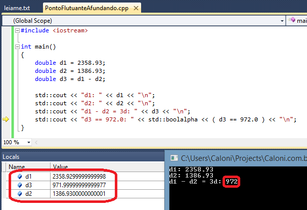
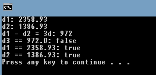

# A Morte lhe Cai Bem
Caloni, 2013-11-02 <cinema> <movies> [up] [copy]Comédia da sessão da tarde feita nos anos 90, era um filme engraçadinho com efeitos visuais de espantar. Hoje se transformou em uma surpreendente crítica aos cosméticos e uma direção extremamente inspirada de Robert Zemeckis (O Voo), que já naquela época prezava pelo controle e expressão do tom do filme através dos nada sutis enquadramentos.
O importante é que o filme envelheceu muito bem, e manteve sua qualidade sobretudo nos efeitos visuais e maquiagem, que são partes vitais da narrativa. Abraçar o absurdo das situações foi uma das melhores estratégias de Zemeckis.
Meryl Streep e Bruce Willis estão bem deslocados de suas personas clássicas, e se saem muitíssimo bem no papel da diva que começa a envelhecer e o cirurgião plástico que não consegue perceber o fascínio das mulheres à sua volta (como na tirada sensacional onde uma delas pergunta qual o seu segredo). O terceiro elemento, a vingança, se mostra menos interessante no decorrer da narrativa, se transformando em uma cópia barata de Streep conforme ambas vão se definhando.
A crítica aos cosméticos não poderia ter sido melhor desenvolvida. A comédia sempre pode ser usada como uma lupa para os nossos erros.
# South Park: Maior, Melhor e Sem Cortes
Caloni, 2013-11-02 <cinema> <movies> [up] [copy]Não é nenhuma novidade que a série South Park preza pelo irreverente e polêmico em prol da comédia e, principalmente, na análise da estupidez humana (espectadores inclusos). No seu longa-metragem, portanto, nada muda. O diferencial é um frescor de piadas sobre os últimos acontecimentos no mundo que seriam feitas na versão televisiva de uma forma ou outra.
Só que o estilo do seriado atira para todos os lados, e atira mais forte na moral americana que combate sexo e palavrões, mas favorece e até incentiva a violência, em um caráter permanentemente pró-bélico. A guerra no Iraque é, portanto, o grande alvo, potencializado pelo fato de Saddam ter sido morto e feito uma aliança de poder, sexo e influência com Satanás.
Em uma repetição do tema palavrões versus violência (como quando um garoto foi alvo de críticas por estar pelado e não por estar formando uma gangue armada), os comediantes Terence e Phillip são alvo de críticas por suas piadas de peidos e para isso instaura-se uma guerra contra seu país de origem: o Canadá. O que os americanos não sabem (exceto o espírito de Kenny) é que ao executar os comediantes serão abertos os portões do inferno para um período de trevas bíblico (claro que a religião não ficaria de fora).
Desenvolvendo a história através de números musicais - mais uma alfinetada na moral e bons costumes - todos os personagens queridos da série ganham tempo em tela, além de novos e sagazes figuras (como o garoto-guerrilheiro que tem uma rixa pessoal com Deus). É preciso ressaltar dois sucessos inigualáveis "Blame Canada" e "Uncle Fucker", além de um momento inédito onde quatro números musicais são mostrados e cantados na tela ao mesmo tempo.
Por tudo isso, "South Park - maior, melhor e sem cortes" é imperdível. Quem perder é um filho da puta fodedor de tios.
# Ponto Flutuante Afundando
Caloni, 2013-11-07 <computer> [up] [copy]Quando armazenamos valores monetários em doubles seus cálculos conseguem manter a precisão e na maioria das vezes o ajuste de precisão funciona. Porém, encontrei alguns casos onde a subtração de dois valores fazia "perder" um centavo (ou comparações exatas) justamente pela limitação da precisão do ponto flutuante. Nesse exemplo os valores são 2.358,93 - 1.386,93, que em uma conta de padaria (mas correta) dá 972,00 (até a Calc do Windows e [o Excel] funcionam), mas pelo Visual Studio 2010 chega perto, mas erra o alvo:
#include <iostream>
int main()
{
double d1 = 2358.93;
double d2 = 1386.93;
double d3 = d1 - d2;
std::cout << "d1: " << d1 << "\n";
std::cout << "d2: " << d2 << "\n";
std::cout << "d1 - d2 = 3d: " << d3 << "\n";
// comparando armazenamentos que diferem
std::cout << "d3 == 972.0: " << std::boolalpha << ( d3 == 972.0 ) << "\n";
// comparando armazenamentos similares
std::cout << "d1 == 2358.93: " << std::boolalpha << ( d1 == 2358.93 ) << "\n";
std::cout << "d2 == 1386.93: " << std::boolalpha << ( d2 == 1386.93 ) << "\n";
}
Isso ocorre porque sua representação dentro da variável double é diferente de 272.0 do outro double. Depurando vemos mais claramente:
Ou seja, quando fazemos a subtração de d2 em d1, nossa precisão raspa um pouquinho e escapa pela beirada:
d1 2358.9299999999998 d2 1386.9300000000001 ====================== d3 971.999999999999777 |||||| Esse é o valor "desejado".
Na comparação com o valor redondo aparece a falha, mas note que isso não ocorre com os outros valores d1 e d2, já que o armazenamento adquire o mesmo formato:
Há uma forma de arredondamento já disponível no C99 (mas não no Visual Studio 2010) que pode ser útil para esses casos. A única coisa que é preciso fazer é arredondar os valores antes do cálculo:
#include <iostream>
double round(double r)
{
return (r > 0.0) ? floor(r + 0.5) : ceil(r - 0.5);
}
int main()
{
double d1 = 2358.93;
double d2 = 1386.93;
double d3 = round(d1) - round(d2);
std::cout << "d1: " << d1 << "\n";
std::cout << "d2: " << d2 << "\n";
std::cout << "d1 - d2 = 3d: " << d3 << "\n";
std::cout << "d3 == 972.0: " << std::boolalpha << ( d3 == 972.0 ) << "\n";
}
É uma decisão arbitrária essa de arredondar para cima, mas se for adotada em todo o sistema (e já fazendo parte de um padrão, no caso, o C99), não deverão existir problemas de interpretação de cálculos entre os componentes.
O mercado financeiro agradece =).
**UPDATE**
Não estou de acordo com o armazenamento de valores monetários em doubles em vez de inteiros pelo simples motivo que **não há moedas no sistema financeiro com unidades que se dividem ad infinitum**. Por consequência, existe sempre uma unidade básica e indivisível (que no caso do Brasil é o centavo de real). Ou seja, como o objetivo é contar o total dessas unidades **que não se dividem**, o uso de inteiros é brainless.
**UPDATE 2**
Existe uma discussão exatamente sobre isso no [Grupo C/C++ Brasil], que recomendo a leitura, o que me levou a escrever o post. Particularmente, sigo o raciocínio do Pedro Lamarão.
até a Calc do Windows e [o Excel]: http://dqsoft.blogspot.com.br/2007/09/ser-que-o-excel-2007-desaprendeu.html
# Elvira, a Rainha das Trevas
Caloni, 2013-11-08 <cinema> <movies> [up] [copy]Aquela comédia sessão da tarde, leve e despretensiosa, que consegue ser digerida passo-a-passo sem maiores problemas. Esse modo inofensivo de Elvira é provavelmente seu ponto mais fraco.
Iniciando com a personagem-título (Cassandra Peterson) apresentando filmes trash em um programa televisivo que se aproveita de seus protuberantes seios para manter a audiência, logo a vemos em uma viagem em busca da herança de uma recém falecida tia-avó (que por sinal se chamava Mortiça) em uma cidadezinha cujos habitantes prezam pela moral. Dessa forma, assim como no romance e na novela global Gabriela, os bons costumes daquelas pessoas serão abalados pela presença da sexual e irreverente Elvira.
Porém, disse "sexual" sem a devida proporção. Essa é uma sessão matinê com censura livre. Desafiar a moral vigente daquele vilarejo é tão somente exibir seu generoso decote e dizer o que pensa. Digamos que para um divertimento leve há cenas picantes o suficiente.
É nessa gana de obter dinheiro e sucesso que a apresentadora de filmes ruins acaba fazendo parte de um. Essa ironia, ainda que tímida, é o que torna Elvira um espécime pelo menos interessante.
# Reino dos Gatos
Caloni, 2013-11-09 <cinema> <movies> [up] [copy]Assim como em O Mundo dos Pequeninos, aqui os estúdios Ghibli fazem o que a Disney/Pixar começa a copiar: pequenas produções sem história desenvolvida para Cinema, mas que ganha a simpatia por usar os mesmos traços conhecidos de produções mais pomposas, como as dirigidas por Miyazaki.
Nesse caso, a autoestima de uma menina na escola é desafiada quando ao salvar um gato falante, que mais tarde descobre ser o príncipe de um reino onde todos os gatos falam (e andam nas duas patas), é escolhida pelo rei a se casar com ele.
A temática do "seja você mesmo" tão explorada nas animações ocidentais parece ganhar um peso metafórico impressionante nas mãos de quem sabe contar uma história. Para se tornar uma princesa, a menina precisa se transformar em um felino e abdicar de sua vida humana que tanto parece lhe trazer sofrimentos. O quão adulta pode ser uma abordagem em filme dirigido ao público infantil?
Ainda assim, como dizia, esse é um trabalho inacabado e toda a trama se desenvolve de forma bem superficial, como um conto que é esticado até se tornar um quase longa. Nesse quesito, a equipe ainda sai ganhando à frente de produções menos inspiradas como Carros 2 e seus derivados.
# Fora de Controle
Caloni, 2013-11-15 <cinema> <movies> [up] [copy]Um drama moral tão bem construído não deveria ser conduzido de forma tão insegura como é feito aqui. A direção de Roger Michell (Um Lugar Chamado Notting Hill, Uma Manhã Gloriosa) combina uma atmosfera de thriller policial com filme de ação e peca justamente ao não nos aproximar dos seus dois personagens quando essa abordagem seria merecida ou necessária.
Em vez disso, muitos closes com uma câmera na mão e muitos cortes sem sentido nos dão a sensação de movimento alucinado em uma história que já cativaria pelo papel de Samuel L. Jackson, que faz um pai de família separado que está a um fio de voltar a ser alcoólatra quando um acidente de carro com um advogado (Ben Afleck) o faz perder a chance de se redimir. Em essência, esses dois homens procuram fazer o que acham correto naquele momento para salvarem suas vidas. O que o filme propõe é uma reflexão nesse "correto" para Ben e um aprofundamento das razões (e ações) de Jackson.
Como as definições morais ficam em um dégradé que vai se formando a cada novo passo de um dos dois protagonistas (mais Jackson, menos Ben), não existe a definição clássica do bem contra o mal, mas a dos antagonistas ocasionais. Tudo é caótico e dá errado para alguém, certo para outro. E vice-versa. O ritmo aos poucos começa a entediar. Mais um tropeço, dessa vez do roteiro do estreante Chap Taylor e do veterano Michael Tolking (dos medíocres Impacto Profundo e Nine), que transforma esse clima de acaso (que é positivo) em uma rota certa para um final mais ou menos previsível, não nos dando fôlego ou espaço para conjecturar o que poderia acontecer.
Mesmo assim, há um momento de "redenção" para o espectador em um novo reencontro. Infelizmente, esse passa tão rápido para o final clichê que mal temos tempo para saboreá-lo. Voltamos para o lugar-comum onde acidentes acontecem, mas cujo destino já está escrito em páginas não tão inspiradas.
# A Conversação
Caloni, 2013-11-16 <cinema> <movies> [up] [copy]Geralmente quando o Cinema se volta para si mesmo (rendendo boa parte das vezes filmes memoráveis) ele nunca pensa em descrever como o som é importante. Direção, atores, fotografia, trilha sonora, tudo isso parece relevante para o público médio. Mas o som, esse pobre coitado, é renegado à posição de "quanto mais invisível, melhor".
Não estou falando de explosões e tiros, é claro. Estou falando dos detalhes imperceptíveis, mesmo. Uma porta se abrindo. Passos pelo corredor. Uma folheada de um livro. Esses detalhes passariam despercebidos em A Conversação se o personagem de Gene Hackman, Harry Caul, não fosse um profissional obcecado pelo perfeccionismo técnico (além do ético).
Harry realiza seu trabalho mais impressionante, e o filme começa presenciando isso: gravar a conversa de um casal no meio de uma grande praça no horário do almoço de um centro comercial. Dezenas a centenas de pessoas passando pelo local. Barulhos e interrupções constantes. Tudo isso registrado com o cuidado característico de Coppola (O Poderoso Chefão, Tetro), um diretor sensível para os detalhes que o espectador espera ver. Nesse caso, o detalhe primordial é o som. Acompanhamos esse diálogo no início do filme, mas parte dele está encoberto por problemas técnicos. Harry precisa editá-lo usando três botões, A B C, e fazer sua mágica revelar o que o casal está dizendo. O som ganha relevo e vira quase um personagem.
A fascinação que surge diante de um profissional desses apenas rivaliza com sua obsessão em permanecer anônimo. Seus clientes geralmente lhe pedem escutas de conversas reveladoras apenas para eles, cujo conteúdo Harry solenemente e profissionalmente ignora. Ciente do perigo que é para as pessoas em sua volta, vive uma rotina métódica de fantasma. Não tem telefone, não tem amigos, e sua companheira não sabe onde ele mora e o que faz. Tudo isso vamos descobrindo apenas acompanhando os passos desse homem calado. Para quem analisa tão profundamente os efeitos do som no ambiente Harry é alguém que não interfere nesse mesmo ambiente.
Sua vida parecia inerte por anos, até que suas dúvidas a respeito das consequências de seu último trabalho o faz repensar seus atos. Sua moral religiosa também faz parte do repertório de métodos para não enlouquecer sozinho. Suas decisões a partir daí também são silenciosas. Conforme seu mundo vai mudando, percebemos seu desmoronamento apenas em seu olhar e seu jeito de andar. Todo o resto fica por conta dos sons ao redor. Que trabalho mais fascinante o de trabalhar com ecos invisíveis!
# Antes Só do que Mal Acompanhado
Caloni, 2013-11-16 <cinema> <movies> [up] [copy]Filmes do John Hughes animavam a sessão da tarde com suas comédias fáceis e leves, mas sempre escondiam uma sub-trama sutil que, revisitada, constituía o conteúdo que o torna tão imortal. Em "Antes Só do Que Mal Acompanhado" é a amizade, empatia, compaixão, ou tudo isso junto, que forma a base da narrativa tão coesa da história de um homem tentando voltar para casa e sua família em um momento especial. O que ele encontra pelo caminho é um pacote de infortúnios, embalado por um estranho que cai em sua vida de para-quedas e não consegue mais sair desde então. Quais são as mensagens que esse estranho tem sobre todos esses sentimentos que citei no início?
Aparentemente, nada. Mas Hughes nos faz olhar mais de perto, em cada reação, fala e trejeito desses dois a partir do momento em que são obrigados a conviver um com o outro. Steve Martin, como sempre, realiza uma persona impecável do homem sério e reservado mas que no fundo é um ser humano aberto como todos a novas experiências. John Candy é John Candy, o sujeito bonachão que com seu sorriso enorme nos comunica seu prazer enorme, com as devidas desculpas, por ter nascido. Mas ele nasceu. E está ali não como coadjuvante da vida, mas como seu protagonista. É isso que o torna não apenas um estorvo ocasional, mas uma criatura tão admirável e digno de empatia quanto sua "vítima".
Martin aprende sua lição depois de uma longa e cansativa viagem. Sua última reflexão é a mensagem que gostaríamos de ter percebido, e o fato de ninguém nos falar explicitamente sobre isso é o que torna o momento tão encantador. E, por último, seu último ato é o que gostaríamos de ter tido se estivéssemos naquela situação e aprendêssemos com ela. Infelizmente, não é todo ser humano que tem o privilégio de aprender com seus erros e infortúnios. O filme nos escancara exatamente para que estejamos mais atentos às oportunidades da vida para sermos gentis e mais humanos com os outros e com nós mesmos.
# O Lugar Onde Tudo Termina
Caloni, 2013-11-22 <cinema> <movies> [up] [copy]É uma satisfação imensa presenciar tantas virtudes técnicas juntas em um filme ambicioso também em seu lado narrativo e temático. Há muitas ideias a serem interpretadas e sentidas em O Lugar Onde Tudo Termina, sendo a principal delas é: até que ponto nossas escolhas conseguem influenciar de alguma forma o futuro? Há uma justiça (divina ou não) em algum lugar ou tudo é uma questão de interpretação?
Iniciamos a história com Luke (Ryan Gosling), um motoqueiro cuja longa sequência sem corte em que o vemos adentrar em um globo da morte e fazer peripécias com três motos juntas já apresenta também sua habilidade e denota a intenção do diretor Derek Cianfrance de tornar seus atores famosos em figuras mais humanas e realistas (como já havia feito no excelente Namorados para Sempre). Há um relacionamento passado que revela que Luke é pai (uma referência e reversão de expectativa interessante com os arquétipos de Star Wars), resultado de uma aventura amorosa com Romina (Eva Mendes). A tristeza de Luke perante a incapacidade de formar uma família ou ao menos manter-se por perto é o ponto de transição que faz com que ele se isole de sua fama e reinicie sua vida se fixando no local.
Porém, quando conhece Kofi (Ben Mendelsohn) e sua vida passada de assalto a bancos, Luke vê aí uma possibilidade de conseguir ao menos sustentar financeiramente seu filho. É o amor de pai que o move para o mundo do crime e o figurino afiado mostrando suas roupas esfarrapadas e seu deixo frouxo de falar que deixa claro que não há muitas alternativas para o obviamente limitado intelecto de Luke.
E é aí que reside o ponto mais ambicioso da trama: acontecimentos que não vêm ao caso trazem à tona outro personagem relevante no meio do filme. A ambição narrativa dos quatro roteiristas e a perfeição técnica com que a narrativa é alinhada com a ajuda do montador Jim Helton concebem uma fluidez admirável para um filme que simplesmente descarta qualquer afeição com a pessoa que iniciou toda a história.
Não apenas isso: a fotografia, inicialmente de um ensolarado e planos abertos que evocam os sentimentos selvagens de Luke e seu desejo de liberdade se fecha para um azul melancólico e que acompanha planos cada vez mais fechados (cenas mais internas, closes mais próximos com menos iluminação). Vemos aos poucos o lado podre da justiça de maneira sistemática e revoltante. Porém, ao mesmo tempo, aguardamos ansiosos pelo desenrolar dos eventos que praticamente atravessam o personagem de Bradley Cooper.
O que nos leva mais uma vez a uma "troca de foco". Dessa vez, quinze anos se passam, e o peso disso é repassado na maquiagem e no clima fúnebre em que isso acontece. Não são dadas dicas explícitas, pois o filme respeita a inteligência do espectador. Porém, sabemos de imediato a conclusão da última conversa que testemunhamos quinze anos atrás. Também descobrimos quase que de supetão o que ocorre com a primeira parte do filme, em mais uma participação digna de destaque para Dane DeHaan (Poder sem Limites).
Ao final, o destino daquelas pessoas já não é mais tão particular. A transição que completa a trama e fecha o ciclo representa a sobrevivência de algo maior que transcende o mero estudo de personagens. O filme se torna o estudo do Cinema como arte de narrar histórias.
# O Panaca
Caloni, 2013-11-27 <cinema> <movies> [up] [copy]Uma comédia pode fazer rir pelo absurdo de suas situações e/ou personagens, como bem lembramos de Debi e Lóide. No entanto, a comédia estrelada por Jim Carrey está longe de ser a precursora dessa ideias do personagem idiota. Há algo muito mais essencial, didático e até filosófico nO Panaca de Steve Martin.
O roteiro, escrito por Martin e Carl Gottlieb (de Tubarão), não se preocupa em ser brilhante. Apenas conduz o protagonista com sérias limitações mentais pelo mundo, pois percebe ser a maneira mais eficaz de o conhecer. O fato de nem parecer existir um roteiro é o que o torna mais elegante.
Já a direção de Carl Reiner, acostumado a produções com o ator, segue o mesmo conceito de não se intrometer por boa parte do filme, com exceção do momento icônico em que vemos um Steve Martin ex-milionário catando objetos aleatórios durante a despedida de sua mansão, quando até a câmera evita acompanhá-lo mais de perto. Suas idiotices eram inocentes e bobas até o dinheiro multiplicá-las.
Esta é uma história de um idiota só, e o ato de pararmos uma hora e meia para assisti-lo é o suficiente para entender que a vida de um panaca não interessa de forma alguma, desde que ele não fique rico com um golpe de sorte qualquer. Aí ele será visto como um gênio, pois o dinheiro comprova seu valor perante a sociedade. Não seria um exagero nem uma ofensa relacionar esta parábola com a situação pós-bolha da internet de tantos novos-ricos, sendo o criador do Facebook o mais icônico entre eles.
O fato de alguém ganhar muito dinheiro o torna um gênio do dia para a noite? Talvez você precise fazer uma revisita ao conto do panaca para repensar os valores que temos hoje em dia.
# Speed Racer
Caloni, 2013-11-28 <cinema> <movies> [up] [copy]Speed Racer está para os animes infantis assim como Scott Pilgrim está para o mundo dos vídeogames: dois filmes que homenageiam seu universo abraçando-o sem limites e que por isso são rechaçados pelo público em geral. Uma linguagem tão inovadora pode causar medo e desconforto, mas é o ponto de virada de todo cinéfilo que se preze e que que deseja sentir mais pelos filmes que assiste.
Já era de se supor que os irmãos Wachowski (The Matrix, Cloud Atlas) iriam fundo no material de suas produções. Mesmo assim, quando o pequeno Speed Racer sai da escola para um céu com nuvens pintadas a surpresa e o contentamento são inesquecíveis. A "reimaginação" das crianças no filme sobre a realidade é alto tão hilário quanto tocante. O mundo dos Racer começa a fazer todo o sentido para mim conforme é desdobrado e a história empolga cada vez mais conforme entendemos melhor como funcionam aqueles carros saltitantes.
Porém, essa não é daquelas experiências visualmente deslumbrantes em cores vivas e chamativas tão somente. Há uma história a ser seguida: o embate entre o mundo dos negócios/dinheiro/poder controlando os resultados das corridas versus a arte pura de contornar desenhos na pista através de saltos inimagináveis; o empenho de toda uma família incentivando o que seu filho faz de melhor; a eterna luta do bem contra o mal, clássica e cartunesca.
Rostos flutuam pela tela cortando as cenas. Personagens à frente da tela separam um fundo a milhas de distância. Closes são trocados em velocidade impressionante no meio da pista entre os corredores. Um filme não trivial merece uma abordagem específica para localizar essa emoção constante nas corridas do desenho original. O grande mérito do filme é buscar isso incansavelmente, em uma construção da cena absurda que nos libera para torcer pelo impossível. E quando ele acontece, é o que esperávamos todo o tempo, e pelo que valeu a pena adentrar nesse mundo fantasioso.